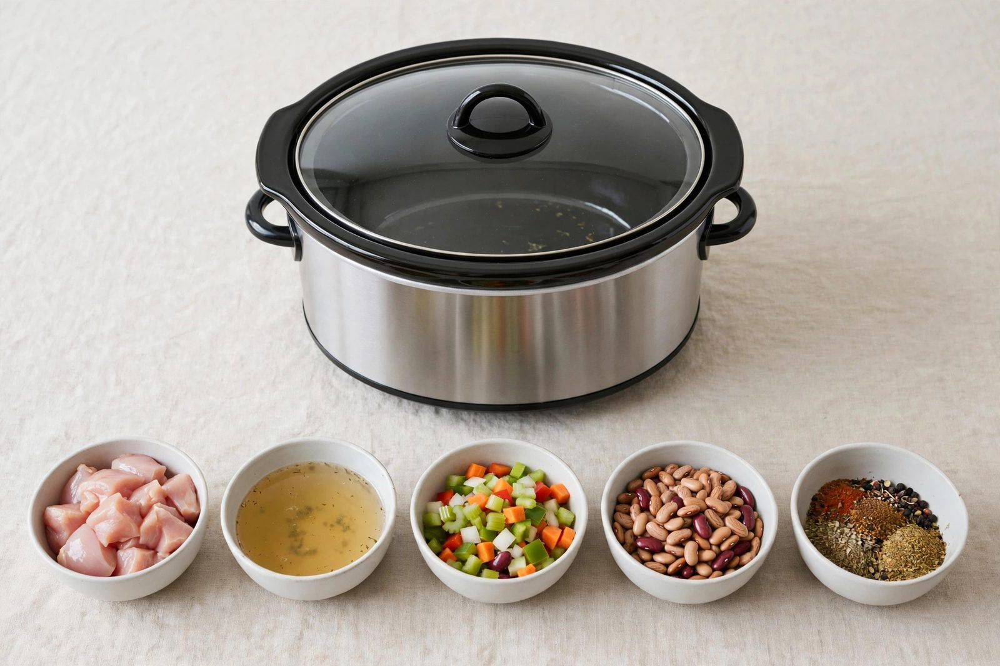

Five-ingredient dump dinners that actually work

Some nights you want a project. Most nights you want dinner to make itself. Dump dinners — everything into the slow cooker, lid on, walk away — are the whole point of owning the thing. But "just throw stuff in" is advice that produces a lot of bland, watery meals. A handful of rules turns five-ingredient cooking into genuinely good eating.
The five-ingredient formula
Most dump dinners that work follow the same shape:
- One protein. Chicken thighs, pork shoulder, chuck roast, ground beef, sausage. Dark, well-marbled cuts do best — lean cuts dry out over long cooking.
- One flavor base. A jar of salsa, a can of tomatoes, barbecue sauce, curry paste, a packet of onion soup mix. This is doing most of the work, so pick something you actually like the taste of.
- One or two vegetables. Onions, peppers, potatoes, carrots — things that hold up over hours of heat.
- One pantry item. Beans, broth, canned chilies, a splash of soy sauce. This rounds out the flavor base.
- Salt and pepper. They count as ingredients in the strictest sense, but everyone agrees they don't.
Combinations worth keeping
These pairings are reliable starting points — adjust to what your family eats:
- Chicken thighs + salsa + black beans + corn + taco seasoning. Shred the chicken when it's done. Tacos, bowls, or quesadilla filling.
- Pork shoulder + barbecue sauce + sliced onion. Pulled pork on buns, with coleslaw if you're feeling ambitious.
- Chuck roast + onion soup mix + beef broth + potatoes + carrots. The classic pot roast, minus the fuss.
- Sausage + peppers + onions + marinara. Over pasta or on rolls.
- Chicken thighs + coconut milk + curry paste + sweet potato. Serve over rice. One pot, one flavor, done.
What goes wrong, and the fix
Watery results. The slow cooker lid traps steam, so dishes can end up soupier than intended. Fix: use less liquid than you think, and finish the last 30 minutes with the lid off if things look thin. Canned tomatoes and salsa already contain a lot of liquid — you rarely need to add broth on top of them.
Blandness. Long cooking mutes flavors, so season at the start and then taste and adjust at the end. A squeeze of lime, a splash of vinegar, or a pinch of salt at serving time does more than doubling the seasoning up front.
Mushy vegetables. Vegetables that need less time (zucchini, peas, fresh herbs) go in for the last 30–60 minutes, not the whole cook. Hearty vegetables (potatoes, carrots, onions) go on the bottom, where the heat is strongest, right from the start.
Timing basics
Most dump dinners want 4–5 hours on high or 7–8 hours on low. Chicken thighs can go either way; lean chicken breasts do better on the shorter end. Don't open the lid to "check" — every peek adds noticeable time. Trust the process, and if it's your first time with a new recipe, err toward the shorter time and check once.
A note on food safety
Don't let the cooker sit on "warm" for hours before serving if you can avoid it — food should be served or refrigerated reasonably soon after it's done. Thaw frozen meat in the fridge before it goes in the cooker rather than starting from frozen. Leftovers should be refrigerated promptly, not left on the counter all evening. When in doubt, stick to the general guidance that food shouldn't linger for long at room temperature, and use your own judgment to serve it hot and fresh.
Five ingredients, one appliance, one dirty dish. That's the whole pitch — and with a little structure behind it, it's genuinely good cooking.